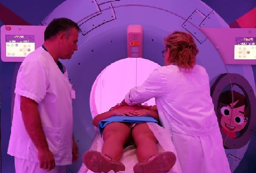

Investigación y Desarrollo
Investigación y Desarrollo

Científico venezolano descubre cómo aplicar la física cuántica al mundo empresarial
Omar Arias, Físico Médico, explicó que el mundo cambia drásticamente y en respuesta a esto se deben usar herramientas novedosas para evitar ser tragados por la crisis y ver esta como una oportunidad para el éxito.

Un ‘TAC espacial’ para reducir las radiaciones en los niños
Se trata del nuevo TAC pediátrico que ha incorporado el hospital Vall d'Hebron de Barcelona, un dispositivo de última generación que consigue reducir hasta un 80% la radiación con respecto a las máquinas más antiguas.
Una de cada tres pruebas radiológicas es innecesaria
Un informe de la Sociedad de Radiólogos recomienda no hacer mamografías de cribado a mujeres menores de 40 ni radiografías de tórax de forma rutinaria

J. M. de los Ríos sin quirófanos, radiología ni laboratorio
15 niños que reciben diálisis están contaminados; las aguas negras inundaron Neurocirugía y los 2 quirófanos que quedaban activos están cerrados por filtraciones.